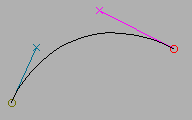
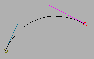
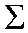
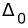
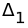
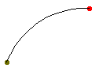
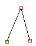
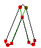

FontForge's math
Being a brief description of the mathematics underlying various of
FontForge's commands
It is presumed that you understand about parameterized splines, if not look
at the description of Bézier curves.
- Linear Transformations
- Finding maxima and minima of a spline
-
Rasterizing a Glyph
- finding intersections
- removing overlap
- Approximating a spline
- Stroking a spline
- Approximating a cubic spline by a series of quadratic splines
Linear Transformations
A linear transformation is one where the spline described by transforming the end and control points will match the transformed spline. This includes most of the common transformations you might wish:
-
translation
x' = x + dx y' = y + dy -
scaling
x' = sx * x y' = sy * y -
rotation
x' = cos(A)*x + sin(A)*y y' = -sin(X)*x + cos(A)*y -
skewing
x' = x + sin(A)*y y' = y
Finding maxima and minima of a spline
The maximum or minimum of a spline (along either the x or y axes) may be found by taking the first derivative of that spline with respect to t. So if we have a spline
x = ax*t3 + bx*t2 + cx*t +dx
y = ay*t3 + by*t2 + cy*t +dy
and we wish to find the maximum point with respect to the x axis we set:
dx/dt = 0
3*ax*t2 + 2*bx*t + cx = 0
and then using the quadratic formula we can solve for t:
| t= | -2*bx ± sqrt(4*bx2 - 4*3*ax*cx) |
----------------------------------- |
|
2*3*ax |
Finding points of inflection of a spline
A point of inflection occurs when d2y/dx2==0 (or infinity).
Unfortunately this does not mean that d2y/dt2==0 or d2x/dt2==0.
| d2y/dx2 = | d/dt ((dy/dt)/(dx/dt)) / dx/dt |
| ( ((dx/dt) * d2y/dt2) - ((dy/dt) * d2x/dt2)) / (dx/dt)3 |
After a lot of algebra this boils down to the quadratic in t:
| 3*(ax*by-ay*bx)*t2 + | ||
| 3*(cx*ay-cy*ax)*t + | ||
| cx*by-cy*bx | = 0 |
If you examine this closely you will note that a quadratic spline (ay==ax==0) can never have a point of inflection.
Rasterizing a glyph
Approximating a spline
Many of FontForge's commands need to fit a spline to a series of points. The most obvious of these are the Edit->Merge, and Element->Simplify commands, but many others rely on the same technique. Let us consider the case of the Merge command, suppose we have the following splines and we wish to remove the middle point and generate a new spline that approximates the original two:
 =>

=>

FontForge uses a least squares approximation to determine the new spline. It calculates the locations of several points along the old splines, and then it guesses1 at t values for those points.
Now a cubic Bézier spline is determined by its two end points (P0 and P1) and two control points (CP0 and CP1, which specify the slope at those end points). Here we know the end points, so all we need is to find the control points. The spline can also be expressed as a cubic polynomial:
S(t) = a*t3 + b*t2 + c*t +d
-- with --
d = P0
c = 3*CP0 - 3*P0
b = 3*CP1 - 6*CP0 + 3*P0
a = P1 - 3*CP1 + 3*CP0 - P0
substituting
S(t) = (P1 - 3*CP1 + 3*CP0 - P0)*t3 +
(3*CP1 - 6*CP0 + 3*P0)*t2 +
(3*CP0 - 3*P0)*t +
P0
rearranging
S(t) = (-3*t3 + 3*t2) * CP1 +
(3*t3 - 6*t2 + 3*t) * CP0 +
(P1-P0)*t3 + 3*P0*t2 - 3*P0*t + P0
Now we want to minimize the sum of the squares of the difference between the value we approximate with the new spline, S(ti), and the actual value we were given, Pi.
|  | [ S(ti) - Pi]2 |
Now we have four unknown variables, the x and y coordinates of the two control points. To find the minimum of the above error term we must take the derivative with respect to each variable, and set that to zero. Then we have four equations with four unknowns and we can solve for each variable.
| 2* (-3*t3 + 3*t2)*[ Sx(ti) - Pi.x] = 0 | ||
| 2* (-3*t3 + 3*t2)*[ Sy(ti) - Pi.y] = 0 | ||
| 2* (3*t3 - 6*t2 + 3*t)*[ Sx(ti) - Pi.x] = 0 | ||
| 2* (3*t3 - 6*t2 + 3*t)*[ Sy(ti) - Pi.y] = 0 |
Happily for us, the x and y terms do not interact and my be solved separately. The procedure is the same for each coordinate, so I shall only show one:
| 2* (-3*t3 + 3*t2)*[ Sx(ti) - Pi.x] = 0 | ||||
| 2* (3*t3 - 6*t2 + 3*t)*[ Sx(ti) - Pi.x] = 0 | ||||
| => | ||||
| (-3*t3 + 3*t2)* | [ (-3*t3 + 3*t2) * CP1x + (3*t3 - 6*t2 + 3*t) * CP0x + (P1x-P0x)*t3 + 3*P0x*t2 - 3*P0x*t + P0x - Pi.x ] |
= 0 | ||
| CP1x | (-3*t3 + 3*t2)*(-3*t3 + 3*t2) | = | - | (-3*t3 + 3*t2)* | [ (3*t3 - 6*t2 + 3*t) * CP0x + (P1x-P0x)*t3 + 3*P0x*t2 - 3*P0x*t + P0x - Pi.x ] |
| CP1x | = | - | (-3*t3 + 3*t2)* | [ (3*t3 - 6*t2 + 3*t) * CP0x + (P1x-P0x)*t3 + 3*P0x*t2 - 3*P0x*t + P0x - Pi.x ] |
||
|
|
||||||
|
||||||
Now this can be plugged into the other equation
| (3*t3 - 6*t2 + 3*t)* | [ (-3*t3 + 3*t2) * CP1x + (3*t3 - 6*t2 + 3*t) * CP0x + (P1x-P0x)*t3 + 3*P0x*t2 - 3*P0x*t + P0x - Pi.x ] |
= 0 |
And we can solve for CP0x and then CP1x. The algebra becomes very messy, with lots of terms, but the concepts are simple.
Thus we know where the control points are. We know where the end points are. We have our spline.
Why that didn't (quite) work
The above matrix yields a curve which is a good approximation to the original two. But it has one flaw: There is no constraint placed on the slopes, and (surprisingly) the slopes at the end-points of the above method are not close enough to those of the original, and the human eye can now detect the join between this generated spline and the two that connect to it.
Generally we will know the slopes at the end points as well as the end points themselves.
Let's try another approach, based on better geometry. Givens:
- the start point
- the slope at the start point
- the end point
- the slope at the end point
We want to find the two control points. Now it may seem that specifying the slope specifies the control point but this is not so, it merely specifies the direction in which the control point lies. The control point may be anywhere along the line through the start point in that direction, and each position will give a different curve.
So we can express the control point by saying it is CP0 = P0 + r0  where is a vector in the direction of the slope, and r0 is the distance in that direction. Similarly for the end point: CP1 = P1 + r1 
We want to find r0 and r1.
Converting from bezier control points into a polynomial gives us
S(t) = a*t3 + b*t2 + c*t + d
- d = P0
- c = 3*(CP0 - P0)
- b = 3*(CP1 - CP0) - c
- a = P1-P0 - c - b
Substituting we get
- d = P0
- c = 3*r0*
- b = 3*(P1-P0+r1*-2*r0)
- a = 2*(P0-P1) + 3*(r0 - r1*)
For least squares we want to minimize
 (S(ti) -
Pi)2.
(S(ti) -
Pi)2.
taking derivatives with both r0 and r1 we get:
| 2* (3*t3 - 6*t2 + 3*t)**[ S(ti) - Pi] = 0 | |||||||||||||||||||
| 2* (-3*t3 + 3*t2)**[ S(ti) - Pi] = 0 | dividing by constants and substituting, we get | (3*t3 - 6*t2 + 3*t)*[ | P0 - Pi + 3 *
(P1-P0*t2 + 2 * (P0 -
P1)*t3 + *(3*t - 6*t2 + 3*t3) * r0 + *(3*t2 - 3*t3) * r1 + |
] = 0 | (-3*t3 + 3*t2)*[ | P0 - Pi + 3 *
(P1-P0*t2 + 2 * (P0 -
P1)*t3 + *(3*t - 6*t2 + 3*t3) * r0 + *(3*t2 - 3*t3) * r1 + |
] = 0 | ||||||||||||
Again we have two linear equations in two unknowns (r0, and r1), and (after a lot of algebraic grubbing) we can solve for them. One interesting thing here is that the x and y terms do not separate but must be summed together.
Singular matrices
Very occasionally, a singular matrix will pop out of these equations. Then what I do is calculate the slope vectors at the endpoints and then try many reasonable lengths for those vectors and see which yields the best approximation to the original curve (this gives us our new control points).
This is very, very slow.
1Guessing values for t
FontForge approximates the lengths of the two splines being merged. If
Pointi = Spline1(old-ti), then we approximate ti by
ti = old-ti
*len(spline1)/(len(spline1)+len(spline2)
and if Pointi = Spline2(old-ti)
ti = len(spline1)/(len(spline1)+len(spline2) +
old-ti *len(spline2)/(len(spline1)+len(spline2)
That is we do a linear interpolation of t based on the relative lengths of
the two splines.
Calculating the outline of a stroked path
A circular pen
PostScript supports several variants on the theme of a circular pen, and FontForge tries to emulate them all. Basically PostScript "stroke"s a path at a certain width by:
at every location on the curve
find the normal vector at that location
find the two points which are width/2 away from the curve
filling in between those two points
end
This is essentially what a circular pen does. The only aberrations appear at the end-points of a contour, or at points where two splines join but their slopes are not continuous. PostScript allows the user to specify the behavior at joints and at end-points.

=> 
FontForge can't deal with an infinite number of locations, so it samples the curve (approximately every em unit), and finds the two normal points. These are on the edge of the area to be stroked, so FontForge can approximate new contours from these edge points (using the above algorithm).
PostScript pens can end in
- A flat edge -- this is easy, we just draw a line from the end of one spline to the end of the other
- A rounded edge -- here we just draw a semi-circle (making sure it goes in the right direction).
- A butt edge -- just draw lines continuing the two splines, moving with the same slope and width/2 units long, and then join those end-points with a straight line.
Things are a bit more complex at a joint  => , the green lines in the right image show where the path would have gone had it not been constrained by a joint, so on the inside of the joint FontForge must figure out where this intersection occurs. While on the outside FontForge must figure out either a round, miter or bevelled edge.
Unfortunately, the normal points are not always on the edge of the filled region. If the curve makes a sharp bend, then one of the normal points may end up inside the pen when it is centered somewhere else on the original contour (similar to the case of a joint above).
So FontForge makes another pass through the edge points and figures out which ones are actually internal points. After that it will approximate contours.
Now if we start with an open contour, (a straight line, for example) then we will end up with one closed contour. While if we start with a closed contour we will end up with two closed contours (one on the inside, and one on the outside). Unless there are places where the curve doubles back on itself, then when can get arbetrarily many closed contours.
An elliptical pen
This is really just the same as a circular pen. Let us say we want an ellipse which is twice as wide as it is high. Then before stroking the path, let's scale it to 50% in the horizontal direction, then stroke it with a circular pen, and then scale it back by 200% horizontally. The result will be as if we had used an elliptical pen.
Obviously if the ellipse is at an angle to the glyph's axes, we must apply a more complicated transformation which involves both rotation and scaling.
A rectangular pen (a calligraphic pen)
Things are subtly different between a rectangular pen and a circular pen. We can no longer just find the points which are a given distance away and normal to the curve. Except where the spline is parallel to one edge of the pen, a the outer contour of a rectangular pen will be stroked by one of its end-points. So all we need do is figure out where a spline is parallel to the pen's sides, and look at the problem in little chunks between those difficult points.
If we are between difficult points then life is very simple indeed. The edge will always be stroked by the same end-point, which is a fixed distance from the center of the pen, so all we need to do is translate the original spline by this distance (and then fix it up so that t goes from [0,1], but that's another easy transformation).
When we reach a point where the spline's slope is parallel to one edge of the pen, then on the outside path we draw a copy of that edge of of the pen, and on the inside edge we calculate a join as above.
An arbitrary convex polygonal pen
The same method which works for a rectangle can be extended without too much difficulty to any convex polygon. (MetaFont fonts can be drawn with such a pen. I don't know if any are)
A pen of variable width
FontForge does not currently support this (some of the assumptions behind this algorithm are broken if the pen changes shape too rapidly).
A pen at a varying angle
FontForge does not support this.